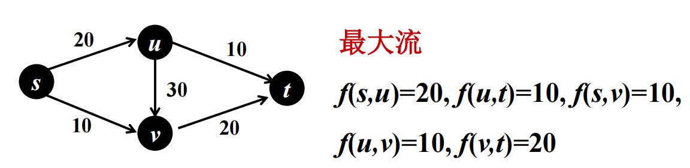
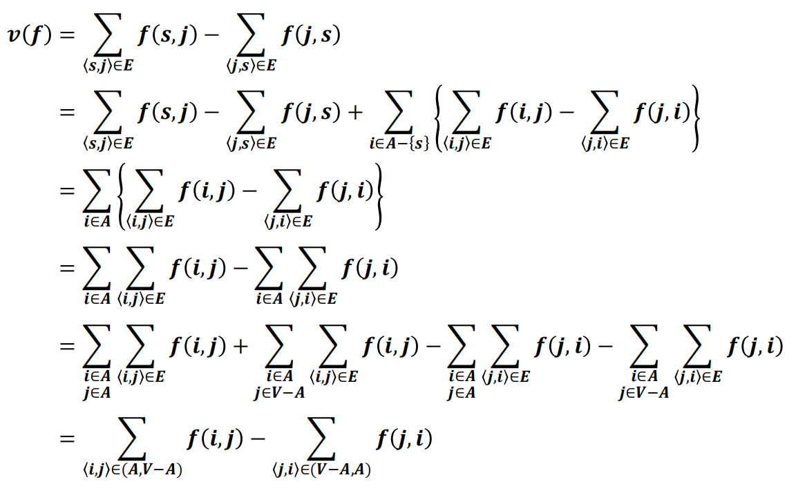
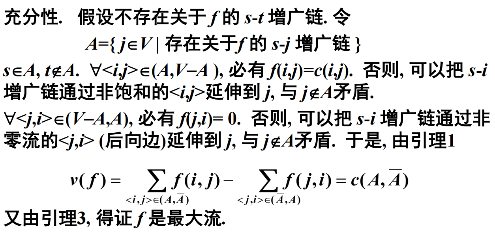
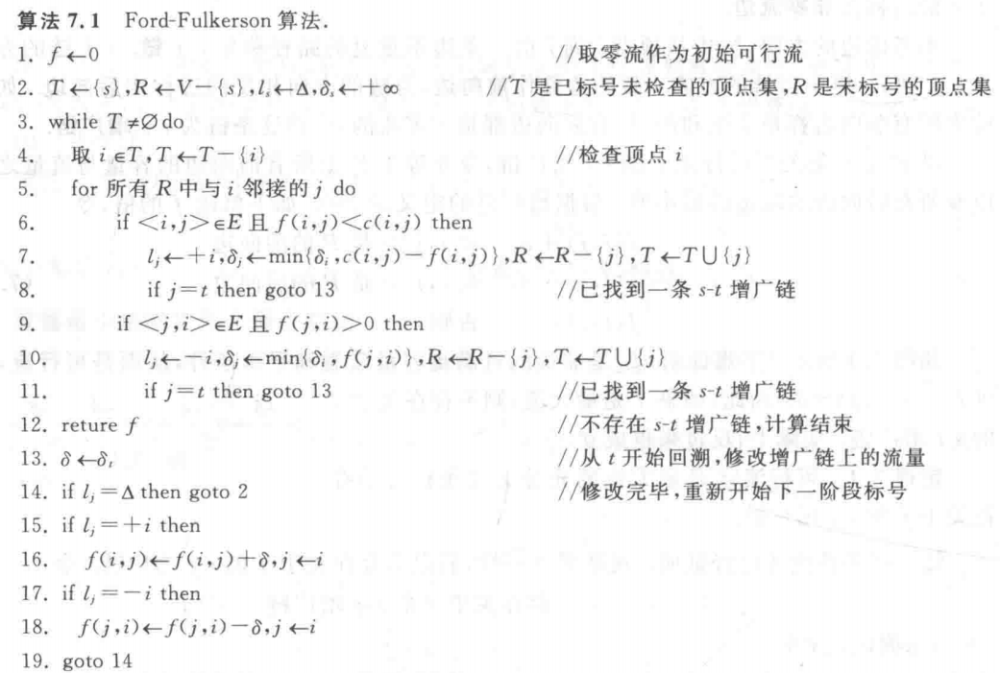
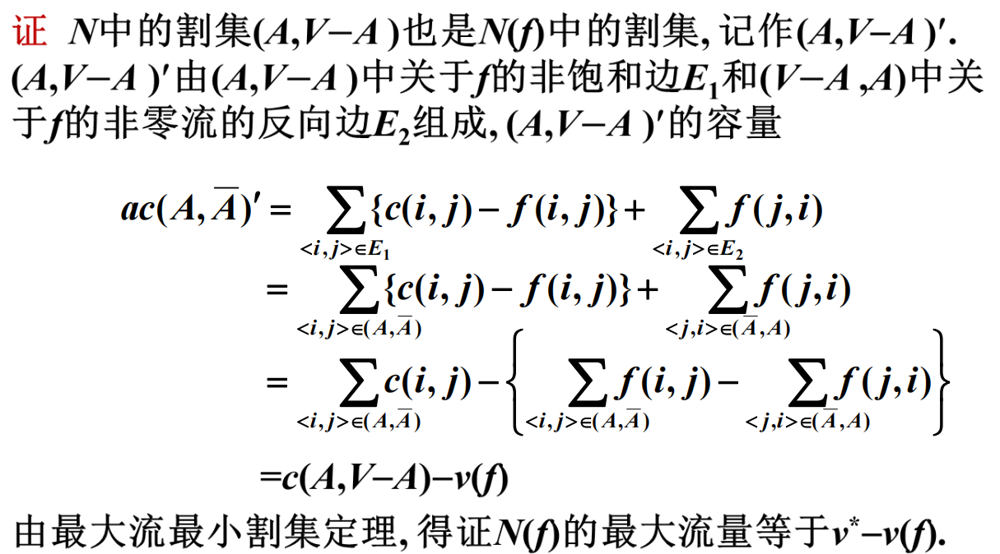
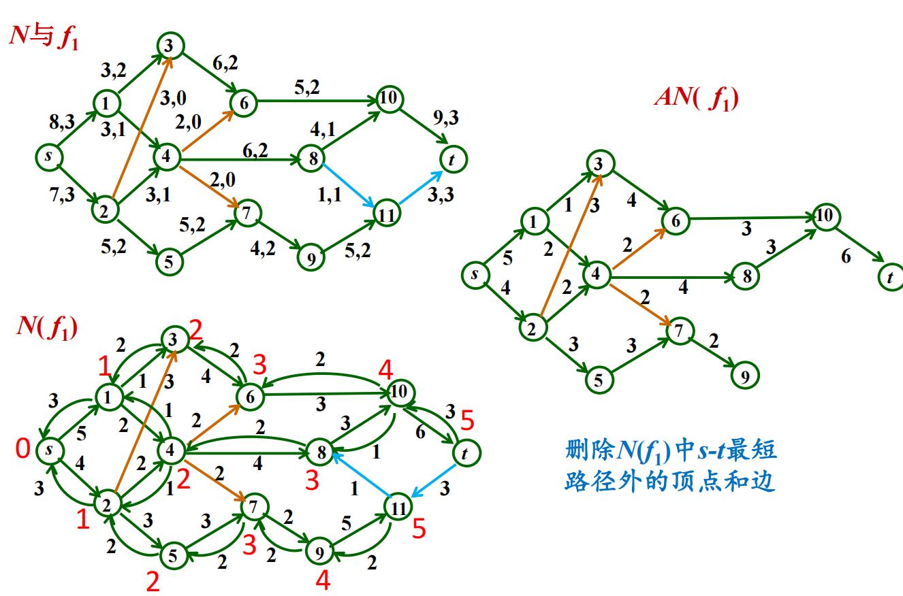
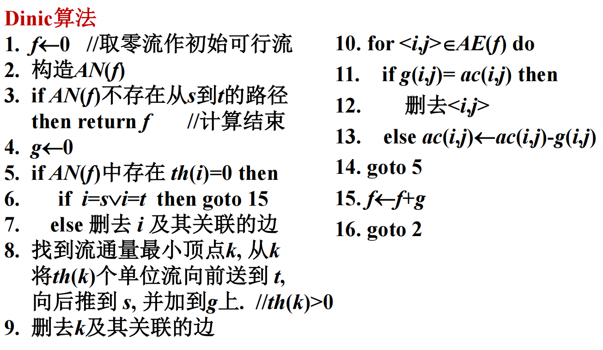
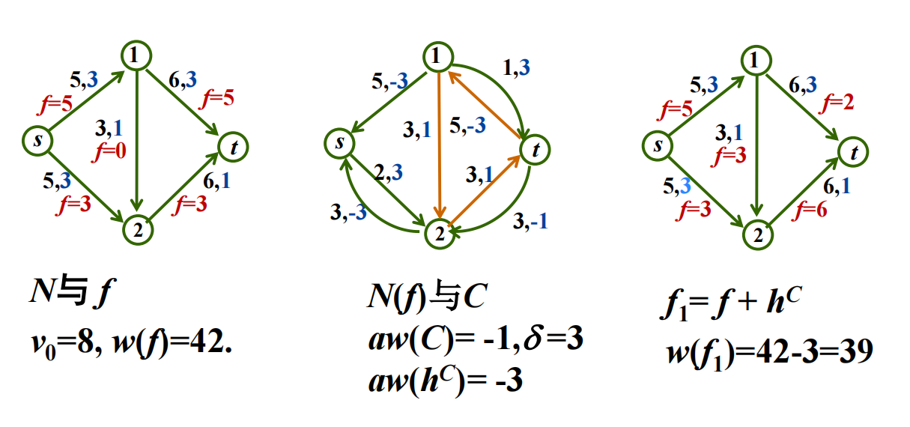
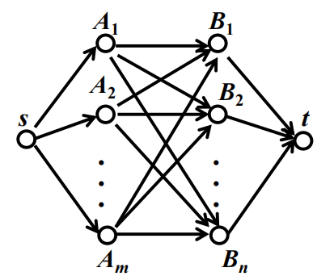
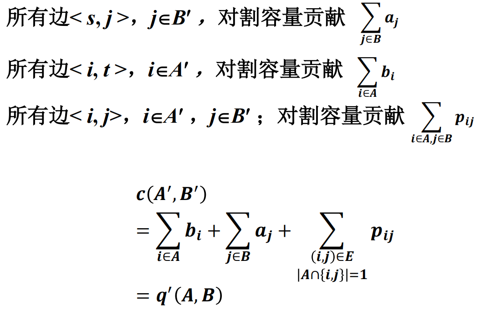

本文最后更新于 2026年11月5日 晚上
北京大学信息科学技术学院
算法设计与分析(2026春)的课程笔记
第七章：网络流
终于要尝试更新网络流了，这一章的ppt可谓是抽象中的抽象，本身定义多多，算法也复杂无比，第一次看时完全懵住，希望今晚我能尽量把它整理清楚www
最大流问题
网络流及其性质
ppt上一开始便是给出形式化抽象定义，让人一头雾水
我们先看生活中的一个例子，考虑A地到B地的公路网络，中间存在若干个收费站和岔路口，每段路都有限定的车流量，除AB两地外，每一个中间点都不允许滞留，也不允许新车辆加入，所以流入等于流出，这便是一个典型的网络流。
电网电流、供水水流、金融现金流本质也类似
我们现在来给出抽象定义：
设有向连通图N=<V,E>，n=∣V∣,m=∣E∣，每条边<i,j>的容量为非负实数c(i,j)，N有两个特殊顶点s,t，s称作发点或源，t称作收点或汇，其余顶点为中间点
此时我们就称N为容量网络，记作N=<V,E,c,s,t>
记f:E→R∗，其中R∗为非负实数集，若f满足：
- ∀<i,j>∈E,f(i,j)≤c(i,j) 容量限制
- ∀i∈V−[s,t],Σ<j,i>∈Ef(j,i)=Σ<i,j>∈Ef(i,j) 平衡条件，流入等于流出
我们就称f为N上的一个可行流，记s点净流出量为f流量，记作v(f)
v(f)=Σ<s,j>∈Ef(s,j)−Σ<j,s>∈Ef(j,s)
显然流量也等于收点的净流入量，即
v(f)=Σ<j,t>∈Ef(j,t)−Σ<t,j>∈Ef(t,j)
既然有了许多种可行流，我们就将流量最大的称为最大流
于是给定容量网络的最大流问题可以转化为线性规划问题：
max v(f)
s.t f(i,j)≤c(i,j), <i,j>∈E 容量限制
Σ<j,i>∈Ef(j,i)−Σ<i,j>∈Ef(i,j)=0, i∈V−[s,t] 平衡条件
v(f)−Σ<s,j>∈Ef(s,j)+Σ<j,s>∈Ef(j,s)=0 流量定义
f(i,j)≥0, <i,j>∈E
v(f)≥0
下面是一个很容易理解的例子

由于最大流问题十分重要，线性规划效率不够高，研究人员开发了许多更有效的算法，下面我们通过了解最大流的性质探究之
定义：容量网络N=<V,E,c,s,t>，A⊂V,s∈A,t∈Aˉ
称(A,Aˉ)=[<i,j>∣<i,j>∈E,i∈A,j∈Aˉ]为A的割集
c(A,Aˉ)=Σ<i,j>∈(A,Aˉ)c(i,j)为割集(A,Aˉ)的容量
容量最小的割集就被称为最小割集
从直觉来看，N的任何可行流都需要通过割集中的边从A流向Aˉ，因此任何可行流容量不会超过割集容量
证明如下，由于公式过多这里就直接插图片了

因此我们有：
∀N上可行流f，v(f)≤c(A,Aˉ)
如果刚好取等，则刚好就是最大流和最小割集
FF算法
下面我们介绍Ford-Fulkerson算法
首先定义，在N中：
流量等于容量的边为饱和边，流量小于容量的边为非饱和边
流量等于0的为零流边，大于0的为非零流边
不考虑边的方向，N中从顶点i到j的一条边不重复的路径称为i-j链，方向从i到j
在链中，与链方向一致的边为前向边，不一致为后向边
如果所有前向边非饱和，后向边非零流，则称这条链为i-j增广链
那么我们大费周章弄出这个增广链，有何作用？
假设找到了P为增广链，令修改量δ为 所有前向边容量与流量之差 和 所有后向边流量的 最小值，显然δ>0
于是我们就可以修改f的值，令f′(i,j)=
- f(i,j)+δ, <i,j>为前向边
- f(i,j)−δ, <i,j>为后向边
- f(i,j),其余情况
不难证明此时的f′也是可行流，且v(f′)=v(f)+δ
所以若f已经是最大流，就不存在 s-t 增广链
反过来也成立，我们来证明一下：

当然上面也证明出了(A,Aˉ)为最小割集，于是有下述定理
最大流最小割定理：容量网络最大流的流量等于最小割集容量
接下来我们看FF算法，它的步骤通常如下：
从给定的初始可行流(通常取零流)开始，寻找一条关于当前可行流的 s-t 增广链P，然后按照上面的方法修改其流量，重复上述过程直至不存在 s-t 增广链
具体寻找 s-t 增广链时，从s开始搜索，逐个给顶点标号，直至t得到标号为止。如果顶点j得到标号，就说明已经找到s-j增广链，标号为(lj,δj)
其中δj类似前面的定义，为直到j为止链上 所有前向边容量与流量之差 和 所有后向边流量的 最小值
lj=i或−i，=i表示链为i到j且<i,j>为前向边，=−i表示链为i到j且<j,i>为后向边
顶点分为三类：已标号已检查，已标号未检查，未标号
开始给s标号(Δ,+∞)，Δ表示发点，此时s是已标号未检查，其余都是未标号
每一步取一个已标号未检查的顶点i，对于所有顶点j
- 若<i,j>∈E且f(i,j)<c(i,j)，前向边情况，则j标号(+i,δj)，其中δj=min(δi,c(i,j)−f(i,j))
- 若<j,i>∈E且f(j,i)>0，后向边情况，则j标号(−i,δj)，其中δj=min(δi,f(j,i))
具体伪代码如下：

时间复杂度：假设所有容量和每一次的δ均为正整数，记C=Σ<s,j>∈Ec(s,j)，显然最大流量v∗≤C
由于δ为正整数，最多有C个阶段，每个阶段标号和修改流量复杂度O(m)
故总时间复杂度为O(mC)
Dinic算法
FF算法没有给出具体标号过程的细节顺序，这就给我们留下了很大的改进空间
Dinic算法给出了两点改进：
- 每次求最短的(边数最少)的 s-t 增广链
- 一次标号修改尽可能多条 s-t 增广链上的流量
还是容量网络N=<V,E,c,s,t>，f为N可行流，我们定义f的辅助网络N(f)=<V,E(f),ac,s,t>，其中：
E+(f)=[<i,j>∣<i,j>∈E,f(i,j)<c(i,j)]
E−(f)=[<j,i>∣<i,j>∈E,f(i,j)>0]
E(f)=E+(f)∩E−(f)
ac(i,j)=
- c(i,j)−f(i,j), <i,j>∈E+(f)
- f(j,i), <i,j>∈E−(f)
ac为辅助容量，可以看出N(f)也是容量网络
由于我们约定了N中任意两点最多只有一条边，因此N(f)中没有平行边
不难看出，N中关于f的 s-t 增广链即为N(f)中s到t的有向路径
引理：N最大流量为v∗，则N(f)最大流量为v∗−v(f)

接下来我们从s开始用BFS，按照与s的距离d(i)，把顶点划分为不相交的层
d(s)=0，s为第0层，从s到t的最短路只可能从s到1层、2层……以此类推直到t
最短路径之外不可能出现从高层到低层的边，同一层顶点之间的边，除t之外层数≥d(t)的顶点
于是我们将这些边和顶点全部删除之后的网络称为分层辅助网络AN(f)=<V(f),AE(f),ac,s,t>
V(f)=∪k=0dVk(f)
AE(f)=∪k=0d−1[<i,j>∣<i,j>∈E(f)∧i∈Vk(f),j∈Vk+1(f)]
Vk(f)=[i∈V∣d(i)=k], 0≤k≤d−1
Vd(f)=t
下面是一个例子：

为了一睹Dinic算法的真面目，我们还需要最后的几个定义：
- 前向增广链：关于f的没有后向边的增广链
- 极大流：不存在前向增广链的可行流
最大流一定是极大流，反之不一定
- 中间点i流通量th(i)：以 i 为终点的边的容量之和与以 i 为始点的边的容量之和中较小者
现在万事俱备，我们终于可以介绍Dinic算法了！
关键就是要求AN(f)的极大流
- 在 AN(f) 中找尽可能多的从 s 到 t 的最短路径并给出这些路径上的容量
- 删去流通量为0的顶点及关联的边. 找到流通量最小的顶点k, 从k开始向后和向前安排流量 th(k), 直到 t 和 s 为止. 修改相关边的容量
- 得到AN(f)的极大流 g，令f′=f+g，重复进行, 直到 s 和 t 不连通为止，此时的f即为最大流
伪代码如下：

一些结论：
- 每个阶段结束时，g为AN(f)极大流
- 每个阶段AN(f+g)的 s-t 距离大于前一个阶段AN(f)的 s-t 距离
- 最后得到的f为最大流
这是由于算法终止时AN(f)中不存在 s-t 的路径，因此N(f)中也没有，则N(f)最大流量为v∗−v(f)为零流，故v(f)=v∗，f为最大流
- 算法在O(n3)步内终止
阶段数量≤n
每阶段工作量：
- 构造AN(f)：O(m)
- 计算流通量：O(m)
- 找最小流通量顶点：最多n次，O(n2)
- 边操作：O(m)+O(n2)
- 如果对于简单容量网络(边容量为1，中间点入度为1或出度为1)，时间可以优化到O(n0.5m)
最小费用流
问题定义
在原有的容量网络N=<V,E,c,s,t>中添加单位费用w:E→R∗
就变成了容量-费用网络，记作N=<V,E,c,w,s,t>
记f为N上一个可行流，称w(f)=Σ<i,j>∈Ew(i,j)f(i,j)为f的费用
所有流量为v0的可行流中，费用最小的称作流量v0的最小费用流
具体算法
和最大流问题类似地，定义辅助网络N(f)=<V,E(f),ac,aw,s,t>
其中辅助费用aw(i,j)=
- w(i,j), <i,j>∈E+(f)
- −w(j,i), <i,j>∈E−(f)
若g为N(f)可行流，则有w(f+g)=w(f)+aw(g)
下面对N中任意 边不重复 的回路C，定义hC为C上的圈流：
- ∀<i,j>∈E(C),hC(i,j)=δ
- ∀<i,j>∈E−E(C),hC(i,j)=0
其中δ>0，为hC的环流量
圈流有如下性质：
- hC为可行流， 且v(hC)=0，w(hC)=δ⋅w(C)
- v(f+hC)=v(f)，w(f+hC)=w(f)+δ⋅aw(C)
下面是一个例子：

一定要认真看一下这个图，这将是前面所有抽象概念的集大成之作！
在图1中每条边标注的第一个数字(黑色)表示容量，每条边标注的第二个数字(蓝色)表示费用，故流量v0=3+5=8，费用w(f)=5×3+5×3+3×3+3×1=42
图2中看上去就有点乱了，让我们回顾一下N(f)
例如由s到2，E+(f)容量为5−3=2，方向依旧正向，费用不变
E−(f)容量为3，方向变为反向，费用变为−3
然后图中橙色为回路C(1→2→t→1)
由于都是正向边，w(C)=aw(C)=1+1−3=−1
δ=3(回路上所有边残余容量的最小值)
故w(hC)=aw(hC)=δ⋅w(C)=−3
图3就是算法中的重要操作：更新流f1=f+hC，得到费用更低的可行流
对于C，回路正向边流量+δ，回路反向边流量−δ
例如1−2容量+3，2−t容量+3，1−t容量−3
更新之后的费用w(f1)=5×3+3×3+3×1+2×3+6×1=39，费用有效减少了
于是我们得到了一个求最小费用流的有效算法：
- 首先求一个流量v0可行流f
- 如果N(f)中存在回路C，aw(C)<0，那么就可以对f加上hC来更新
- 重复进行直至N(f)中不存在aw(C)<0的回路C，此时f即为最小费用流
如何求负回路
对于回路C来说，aw(C)本质上就是C每边的费用加和
所以要找aw(C)<0的回路C，就是在有向带权图中寻找负回路
引理：图中任意两点间要么有最短路径，要么不存在路径 ⟺ 图中没有负回路
由此，我们可以将负回路的存在问题转化为多源最短路径问题
于是梦回数算！下面就是Floyd算法回归的时刻了
记dk(i,j)为i到j经过号码不大于k的最短路径长度
则类似dp，我们有递推式：
d(0)(i,j)=w(i,j),d(0)(i,i)=0
d(k)(i,j)=min(d(k−1)(i,j),d(k−1)(i,k)+d(k−1)(k,j))
若存在i使得d(n)(i,i)<0，则有负回路
为了记录路径，我们记h(k)(i,j)为i到j经过号码不大于k的最短路径中i的下一个顶点
则有h(0)(i,j)=
- j, <i,j>∈E
- 0, else
h(k)(i,j)=
- h(k−1)(i,j), d(k−1)(i,j)≤d(k−1)(i,k)+d(k−1)(k,j)
- h(k−1)(i,k), else
当然，最短路径也有别的方法，比如从零流开始，每次用floyd(若存在负回路)或者ford算法找费用最小的 s-t增广链，增广直至流量达到v0，这里就不再赘述了
网络流的应用
带需求的流通
给定流通图N=<V,E,c,s,t>
非常烦人的是∀v∈V,∃dv为需求
- 收点：dv>0，表示v对流有dv的需求
- 发点：dv<0，表示v对流有−dv的供给
- 结点：既不是发点也不是收点，dv=0
所有容量和需求均为整数
问：是否存在可行流通，即存在函数f:E→R∗，满足
- 容量条件：∀e∈E,0≤f(e)≤ce
- 需求条件：∀v∈V,fin(v)−fout(v)=dv
从经济学的角度来说，由于没有外部因素，供需是平衡的。
因此有Σv:dv>0dv=Σv:dv<0−dv，我们记这个和为D
于是可以用最大流进行建模，记所有发点的集合S，收点集合T
我们增加超结点s∗和t∗，构建单发点单收点的容量网络G′
∀v∈S，加边e=<s∗,v>,ce=−dv
∀v∈T，加边e=<v,t∗>,ce=dv
具体算法：
- 将G转换为对应G′
- 对G′用最大流算法找到s∗-t∗最大流f
- 若v(f)=D，则G存在需求dv的可行流通，否则不存在
扩展：带下界的可行流通，∀e∈E,le≤f(e)≤ce，需求条件不变
运输问题
有m个产地A1,A2,...,Am，n个销地B1,B2,...,Bn
Ai产量ai，Bj销量bj，从Ai到Bj单位运费wij
我们假设产销平衡，Σi=1mai=Σj=1nbj
求使总运费最少的运输方案
我们设运输方案为x，即在Ai,Bj之间运输xij的货物
则有xij≥0
Σj=1nxij=ai
Σi=1mxij=bj
总费用w(x)=Σi=1mΣj=1nwijxij
我们要求使得w(x)最小的方案x
建模时，依旧是添加s,t，组成容量费用网络N=<V,E,c,w,s,t>
如图所示

其中：
- s−Ai的边，容量为ai，费用为0
- Bi−t的边，容量为bi，费用为0
- Ai−Bi的边，容量为+∞，费用为wij
于是总运费最少的运输方案就转化为求流量v0=Σi=1mai的最小费用流
图像分割
我们需要将图像的前景和背景分离，这就得对每个像素，标记其是属于前景A还是背景B
设V为像素集合，用E表示所有相邻像素对的集合，形成无向图G=<V,E>
对像素i，记它属于前景的可能性ai，属于背景的可能性bi
显然如果ai>bi，就将其标记为前景，否则就是背景
记集合A为标记为前景的像素，B为背景像素
如果像素i的“邻居”都被标记为背景，我们就倾向于也将其标为背景，这样可以使标记更光滑
因此我们对于每组邻居(i,j)，定义惩罚pij，惩罚他们标记不同
则图像分割问题就变成了最大化权值q(A,B)=
Σi∈Aai+Σj∈Bbj−Σ(i,j)∈E且标记不同 pij
我们记Q=Σi(ai+bi)，则q(A,B)=Q−q′(A,B)
q′(A,B)=Σi∈Abi+Σj∈Baj−Σ(i,j)∈E且标记不同 pij
由于Q为定值，最大化q(A,B)等价于最小化q′(A,B)
为什么要如此转化呢？下面我们建模
构造容量网络G′，源点s(前景)，汇点t(背景)
对于每个像素v，连边(s,v),(t,v)，容量分别为av,bv
对每条无向边(u,v)，将其转化为两条有向边<u,v>,<v,u>，容量均为puv
记A′=A∪s，B′=B∪t，由此我们可以计算割(A′,B′)的容量

于是最大化q(A,B)等价于求最小割集(A′,B′)
算法的时间复杂度为O(n3)
编者按：耗时两天也是终于整理完了网络流的笔记，不得不说这样复习一遍下来还是很有收获的，虽然抽象的Dinic算法完全没搞懂，但是辅助网络和应用部分总算是略知一二~今天正好是儿童节，那就奖励自己更新非常水的第十一章吧